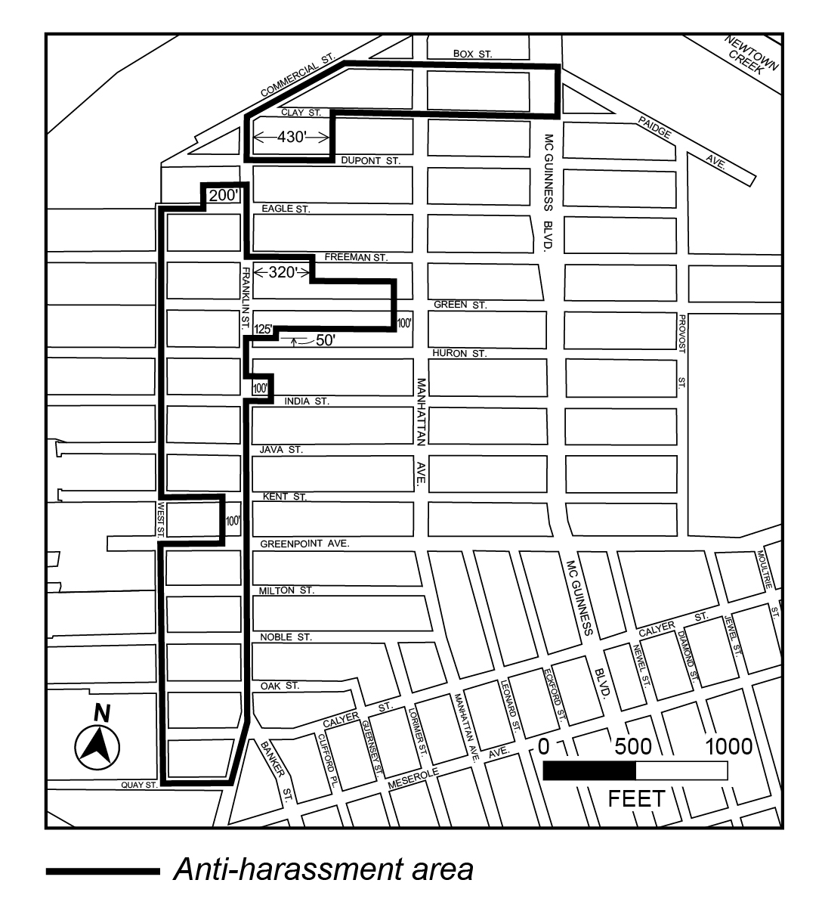
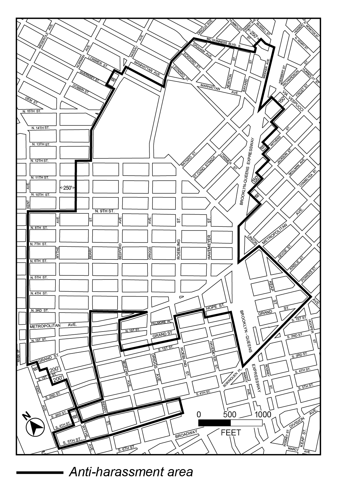

Article II, Chapter 7 — Additional Regulations and Administration in Residence Districts
NYC Zoning Resolution — text through 2026-08-13
27-00 APPLICABILITY, GENERAL PURPOSES AND DEFINITIONS
Last amended 2024-12-05
APPLICABILITY, GENERAL PURPOSES AND DEFINITIONS
Official NYC Planning source
27-01 Applicability of This Chapter
Last amended 2024-12-05
The regulations of this Chapter shall apply:
- to the provision of affordable housing, as set forth in 27-10 (ADMINISTRATION OF AFFORDABLE HOUSING); and
- to anti-harassment areas, as set forth in 27-20 (ANTI-HARASSMENT).
Official NYC Planning source
27-11 Definitions
Last amended 2024-12-05
For the purposes of this Section, inclusive, matter in italics is defined either in Section 12-10 (DEFINITIONS) or in this Section.
Official NYC Planning source
27-12 General Provisions
Last amended 2024-12-05
MIH and UAP are established to promote the creation and preservation of affordable housing for residents with varied incomes citywide and to enhance neighborhood economic diversity and thus to promote the general welfare. Requirements for affordable housing are set forth in Section 27-00, inclusive.
Wherever the provisions of Section 27-00, inclusive, provide that approval is required, HPD may specify the form of such approval in the guidelines.
Official NYC Planning source
27-14 Methods of Providing Affordable Housing
Last amended 2024-12-05
- For UAP developments, affordable housing shall be either new construction affordable housing, preservation affordable housing or a conversion from non-residential to residential use. For MIH developments, affordable housing shall be either new construction affordable housing or a conversion from non-residential to residential use. Conversions shall comply with the requirements of Section 27-10 (ADMINISTRATION OF AFFORDABLE HOUSING), inclusive, applicable to new construction affordable housing.
- When determining whether affordable housing is new construction affordable housing or preservation affordable housing, or when making a determination as to which building constitutes a UAP site, HPD may separately consider each building on a zoning lot. Where any such building consists of two or more contiguous sections separated by walls or other barriers, HPD may consider all relevant facts and circumstances when determining whether to consider the sections of such building separately or collectively, including, but not limited to, whether such sections share systems, utilities, entrances, common areas or other common elements and whether such sections have separate deeds, ownership, tax lots, certificates of occupancy, independent entrances, independent addresses or other evidence of independent functional use.
- The amount of affordable floor area in any MIH site or UAP site shall be determined based upon plans for such MIH site or UAP site which have been approved by the Department of Buildings and which indicate thereon the amount of floor area devoted to affordable housing and the amount of floor area devoted to other residential uses. However, for UAP sites where the Department of Buildings does not require floor area calculations, the amount of affordable floor area shall be determined by methods specified in the guidelines.
- The amount of qualifying floor area for any income band in an MIH site or UAP site shall be determined by the same method as the calculation of affordable floor area.
- Affordable housing units shall be either rental affordable housing or homeownership affordable housing.
- An MIH site that is part of an MIH zoning lot, or a UAP site that is part of a UAP zoning lot, in which at least two-thirds of the dwelling units are affordable housing units shall be either a building that:
- shares a common street entrance with another building on the zoning lot in which less than one-third of the dwelling units are affordable housing units; or
- is independent, from grade at the street wall line to the sky, of any other building on the zoning lot in which less than one-third of the dwelling units are affordable housing units, and such building shall have its primary entrance on a street frontage that has primary entrances for other residential buildings.
- HPD may waive the requirements of this paragraph (f) if it determines that the buildings on the zoning lot are otherwise located in a manner that does not stigmatize occupants of affordable housing units.
- HPD shall have the right, in its sole discretion, to deny any affordable housing application proposing preservation affordable housing, and shall have the right, in its sole discretion, to deny any affordable housing application that includes homeownership affordable housing, qualifying senior housing, or a supportive housing project, and instead require that such MIH site or UAP site be developed with rental affordable housing. Pursuant to paragraph (k) of Section 27-16 (Requirements for MIH Sites or UAP Sites), HPD may adopt guidelines for the implementation of this paragraph (g).
Official NYC Planning source
27-16 Requirements for MIH Sites or UAP Sites
Last amended 2024-12-05
Affordable housing in an MIH site or UAP site shall meet each of the requirements set forth in this Section for the entire regulatory period, except that affordable housing restricted pursuant to an affordable housing regulatory agreement shall only be required to comply with paragraphs (a) and (j) of this Section.
- Location of MIH site or UAP site and MIH zoning lot or UAP zoning lot
Where an MIH site or UAP site is not located within the MIH zoning lot or the UAP zoning lot, as applicable:
- the MIH site or UAP site and the MIH zoning lot or UAP development, as applicable, shall be located within the same Community District; or
- the MIH site or UAP site and the MIH zoning lot or UAP zoning lot, as applicable, shall be located in adjacent Community Districts and within one-half mile of each other, measured from the perimeter of each zoning lot.
Outside of UAP offsite option areas, a UAP site must be located within the UAP zoning lot.
- Distribution of affordable housing units
In new construction affordable housing, where one or more of the dwelling units or rooming units in an MIH site or UAP site, other than any super’s unit, are not affordable housing units:
- the affordable housing units shall be distributed on not less than 65 percent of the residential stories of such MIH site or UAP site, or, if there are insufficient affordable housing units to comply with this requirement, the distribution of affordable housing units shall be as specified in the guidelines; and
- not more than two-thirds of the dwelling units and rooming units on any story of such MIH site or UAP site shall be affordable housing units, unless not less than two-thirds of the dwelling units and rooming units on each residential story of such MIH site or UAP site are affordable housing units. HPD may waive such requirement for any new construction affordable housing that is located on an interior lot or through lot with less than 50 feet of frontage along any street.
Where one or more of the dwelling units or rooming units, other than any super’s unit, are not affordable housing units, the affordable housing units shall share a common primary entrance with the other dwelling units or rooming units. However, if an MIH site or UAP site contains both homeownership and rental housing and no affordable housing units are homeownership housing, the distribution requirements above shall only apply to residential stories containing rental housing. In addition, the distribution requirements above shall not apply if all affordable housing units are rental affordable housing and all other dwelling units are homeownership housing, and shall not apply to any affordable housing units that are also supportive housing units or affordable independent residences for seniors.
In addition, HPD may waive these requirements for affordable floor area created in an MIH site or UAP site through enlargement, as specified in the guidelines.
HPD may disapprove any building configuration that would frustrate the intent and purpose of this Section by segregating affordable housing units or stigmatizing residents of such affordable housing units.
- Bedroom mix of affordable housing units
- In new construction affordable housing, where one or more of the dwelling units in an MIH site or UAP site, other than any super’s unit, are not affordable housing units, either:
- the dwelling units that are affordable housing units shall contain a bedroom mix at least proportional to the bedroom mix of the dwelling units, other than any super’s unit, that are not affordable housing units; or
- not less than 50 percent of the dwelling units that are affordable housing units shall contain two or more bedrooms and not less than 75 percent of the dwelling units that are affordable housing units shall contain one or more bedrooms.
However, such bedroom mix requirements shall not apply to affordable independent residences for seniors. HPD may also waive such bedroom mix requirements for any new construction affordable housing that is located on an interior lot or through lot with less than 50 feet of frontage along any street. In addition, HPD may waive these requirements for affordable floor area created in an MIH site or UAP site through enlargement, as specified in the guidelines.
- Where all of the dwelling units in an MIH site or UAP site, other than any super’s unit, in new construction affordable housing are affordable housing units, the bedroom mix shall be as set forth in the guidelines.
- Supportive housing units shall contain such configuration as HPD shall require.
- For purposes of this paragraph (c), fractions equal to or greater than one-half resulting from any calculation shall be considered to be one dwelling unit.
- Size of affordable housing units
- In new construction affordable housing, the average size of affordable housing units of a particular bedroom count shall be not less than the average size of dwelling units that are not affordable housing units with the same number of bedrooms, or the minimum size specified below for a dwelling unit of a particular bedroom count, whichever is less:
- 400 square feet of floor area within the perimeter walls for a zero bedroom dwelling unit;
- 575 square feet of floor area within the perimeter walls for a one bedroom dwelling unit;
- 775 square feet of floor area within the perimeter walls for a two bedroom dwelling unit; or
- 950 square feet of floor area within the perimeter walls for a three bedroom dwelling unit.
However, these unit size requirements shall not apply to affordable independent residences for seniors.
HPD may specify the method of measuring floor area within affordable housing units in the guidelines, compliant with Department of Buildings practice; and
- Where all of the dwelling units in an MIH site or UAP site, other than any super’s unit, in new construction affordable housing are affordable housing units, such affordable housing units shall comply with the size requirements as set forth in the guidelines.
- Supportive housing units shall comply with the size requirements specified by HPD.
- Records
For a period of time specified in the guidelines, the owner of the affordable housing units shall maintain all records setting forth the facts that form the basis of any affidavit submitted to HPD, and shall make such records available for inspection and audit by HPD upon request.
- Restrictive declaration
- The restrictive declaration shall require compliance with and shall incorporate by reference the affordable housing application and the applicable provisions of this Zoning Resolution and the guidelines and shall contain such additional terms and conditions as HPD deems necessary.
- The restrictive declaration shall require that HPD be provided with documentation indicating the amount of affordable floor area. For new construction affordable housing such documentation shall include, but shall not be limited to, plans meeting the requirements of paragraph (c) of Section 27-14 (Methods of Providing Affordable Housing).
- The restrictive declaration shall be recorded against all tax lots comprising the portion of the zoning lot within which the MIH site or UAP site is located and shall set forth the obligations, running with such tax lots, of the owner and all successors in interest to provide affordable housing in accordance with the affordable housing application for the entire regulatory period.
- Where applicable in accordance with paragraph (b) (Monthly rent) of Section 27-161 (Additional requirements for rental affordable housing), the restrictive declaration shall provide that certain obligations shall survive the regulatory period.
- Housing standards
Upon the date that HPD issues the completion notice, the MIH site or UAP site shall be free of violations of record issued by any City or State agency pursuant to the Multiple Dwelling Law, the Building Code, the Housing Maintenance Code and this Zoning Resolution, except as may otherwise be provided in the guidelines.
- Insurance
The affordable housing shall at all times be insured against any damage or destruction in an amount not less than the replacement value of such affordable housing.
- Duration of obligations
The obligation to provide and maintain a specified amount of affordable housing on an MIH site or UAP site shall run with the zoning lot containing such MIH site or UAP site for not less than the regulatory period.
- One MIH site or UAP site may satisfy requirements for multiple MIH zoning lots or UAP zoning lots, as applicable
Any MIH site or UAP site may contain affordable housing that satisfies the requirements of this Chapter, for more than one MIH development or UAP development, as applicable, provided that no affordable floor area shall be counted more than once in satisfying the requirements of such MIH developments or UAP developments, or for the purposes of utilizing floor area provisions applicable to qualifying affordable housing in Section 23-22 (Floor Area Regulations for R6 Through R12 Districts).
(k) Guidelines
HPD shall adopt and may modify guidelines for the implementation of the provisions of Section 27-00, inclusive.
Official NYC Planning source
27-20 ANTI-HARASSMENT
Last amended 2024-12-05
Within the Greenpoint-Williamsburg anti-harassment areas in Community District 1, Borough of Brooklyn, as shown in the diagrams in this Section, the provisions of paragraphs (a) through (d), inclusive, of Section 93-90 (HARASSMENT) shall apply as modified in this Section.
For the purposes of this Section, the following definitions in paragraph (a) of Section 93-90, shall be modified:
Anti-harassment area
“Anti-harassment area” shall mean the Greenpoint-Williamsburg anti-harassment areas as shown in the diagrams:

27-20, Greenpoint-Williamsburg Anti-Harassment Areas, map 1" typeof="foaf:Image">

27-20, Greenpoint-Williamsburg Anti-Harassment Areas, map 2" typeof="foaf:Image">
Greenpoint-Williamsburg Anti-Harassment Areas
Referral date
“Referral date” shall mean October 4, 2004.
In addition, paragraph (d)(3) of Section 93-90 is modified as follows:
(3) No portion of the low income housing required under this Section shall qualify to:
(i) increase the floor area ratio pursuant to the provisions of Section 27-10 (ADMINISTRATION OF AFFORDABLE HOUSING) or 62-361 (Special floor area regulations); or
(ii) increase the maximum height of a building or the height above which the gross area per residential story of a building is limited pursuant to the provisions of paragraphs (b)(2) and (d) of Section 62-363 (Special height and setback regulations); or
(iii) satisfy an eligibility requirement of any real property tax abatement or exemption program with respect to any multiple dwelling that does not contain such low income housing.
Official NYC Planning source
27-111 General definitions
Last amended 2024-12-05
The following definitions shall apply throughout Section 27-10 (ADMINISTRATION OF AFFORDABLE HOUSING), inclusive:
Affordable floor area
- Where all of the dwelling units, rooming units and supportive housing units in an MIH site or UAP site, other than any super’s unit, are affordable housing units, all of the residential floor area or community facility floor area for a supportive housing project, in such UAP site or MIH site is “affordable floor area.”
- Where one or more of the dwelling units or rooming units in an MIH site or UAP site, other than any super’s unit, are not affordable housing units, the affordable floor area in such MIH site or UAP site is the sum of:
- all of the residential floor area of the affordable housing units in such MIH site or UAP site; plus
- a figure determined by multiplying the residential floor area of the eligible common areas in such MIH site or UAP site by a fraction, the numerator of which is all of the residential floor area of the affordable housing units in such MIH site or UAP site and the denominator of which is the sum of the residential floor area of the affordable housing units in such MIH site or UAP site plus the residential floor area of the dwelling units or rooming units in such MIH site or UAP site, other than any super’s unit, that are not affordable housing units.
Affordable housing
“Affordable housing” consists of:
- affordable housing units; and
- eligible common areas.
Affordable housing application
An “affordable housing application” is an application submitted to HPD that specifies how affordable housing will be provided on an MIH site or a UAP site, in compliance with the provisions of Section 27-00 (APPLICABILITY, GENERAL PURPOSES AND DEFINITIONS), inclusive.
Affordable housing fund
With respect to the requirements of paragraph (a)(3)(v) of Section 27-131, the “affordable housing fund” is a fund administered by HPD, all contributions to which shall be used for development, acquisition, rehabilitation, or preservation of affordable housing, or other affordable housing purposes as set forth in the guidelines. Each contribution into such fund shall be reserved for use within the borough in which the MIH development making such contribution is located and, for a minimum of 10 years, shall be reserved for use in the same Community District in which the MIH development making such contribution is located. HPD shall issue a public report on the use of such fund no less frequently than annually.
Further provisions for the use of such funds may be set forth in the guidelines.
Affordable housing regulatory agreement
An “affordable housing regulatory agreement” is a legally binding agreement between the owner of a building and a Federal, State, or local agency or instrumentality with respect to a development, enlargement, or conversion from non-residential to residential use, which:
- requires all of the dwelling units, rooming units, or supportive housing units in such building to be income-restricted and occupied by an eligible household as established by such agreement for a period of no less than 30 years;
- for a rental building, restricts an amount of floor area that would otherwise be required for the MIH development, UAP development or qualifying residential site subject to affordability requirements for the life of such building, or, for a homeownership building, requires such building to be owned by a housing development fund corporation established pursuant to Article XI of the Private Housing Finance Law for the life of such building; and
- is entered into in connection with public funding.
HPD may impose additional requirements for buildings subject to an affordable housing regulatory agreement in the guidelines.
Affordable housing unit
An “affordable housing unit” is:
- a dwelling unit, other than a super’s unit, that is used for class A occupancy as defined in the Multiple Dwelling Law, or a rooming unit, other than a super’s unit, that is used for either Class A or Class B occupancy as defined in the Multiple Dwelling Law, and that is or will be restricted, pursuant to an affordable housing regulatory agreement or restrictive declaration, to occupancy by:
- for a UAP site:
- households having an income less than or equal to a weighted average of 60 percent of the income index at initial occupancy:
- with no more than three income bands;
- no income band exceeding 100 percent of the income index; and
- for UAP sites with 10,000 square feet or more of affordable floor area, at least 20 percent of such affordable floor area at an income band of no more than 40 percent of the income index.
However, with regard to preservation affordable housing, a grandfathered tenant shall also be permitted to occupy such affordable housing unit; or
- households as specified in an affordable housing regulatory agreement executed after December 5, 2024; or
- for an MIH site, qualifying households;
- a supportive housing unit within a supportive housing project.
Affordable housing units that are restricted to homeownership, as defined in Section 27-113, pursuant to an affordable housing regulatory agreement or a restrictive declaration, must be dwelling units.
Capital element
“Capital elements” are, with respect to any UAP site, the electrical, plumbing, heating and ventilation systems in such UAP site, any air conditioning system in such UAP site and all facades, parapets, roofs, windows, doors, elevators, concrete and masonry in such UAP site and any other portions of such UAP site specified in the guidelines.
Completion notice
A “completion notice” is a notice from HPD to the Department of Buildings stating that the affordable housing in all or a portion of any MIH site or UAP site is complete and stating the affordable floor area of such affordable housing.
Eligible common area
An eligible common area includes any residential floor area that is located within a super’s unit, and any residential floor area in such MIH site or UAP site that is not located within any other dwelling unit or rooming unit, but shall not include any residential floor area for which a user fee is charged to residents of affordable housing units.
Grandfathered tenant
A “grandfathered tenant” is any household that:
- occupied an affordable housing unit in preservation affordable housing on the restrictive declaration date, pursuant to a lease, occupancy agreement or statutory tenancy under which one or more members of such household was a primary tenant of such affordable housing unit; and
- has not been certified to have an annual income below the income band applicable to such affordable housing unit; or
- in homeownership preservation affordable housing, has been certified to have an annual income below the income band applicable to such affordable housing unit, but has elected not to purchase such affordable housing unit.
In Mandatory Inclusionary Housing areas, grandfathered tenants may include tenants of buildings on an MIH site that have been or will be demolished, as set forth in the guidelines.
Guidelines
The “guidelines” are the guidelines adopted by HPD, pursuant to paragraph (k) of Section 27-16 (Requirements for MIH Sites or UAP Sites).
Household
Prior to initial occupancy of an affordable housing unit, a “household” is, collectively, all of the persons intending to occupy such affordable housing unit at initial occupancy. After initial occupancy of an affordable housing unit, a household is, collectively, all of the persons occupying such affordable housing unit.
HPD
“HPD” is the Department of Housing Preservation and Development or its successor agency or designee, acting by or through its Commissioner or his or her designee.
Income band
An “income band” is a percentage of the income index that is the maximum income for occupants of affordable housing units at initial occupancy. Income bands shall all be multiples of 10 percent of the income index, except for an income band at 135 percent of the income index provided pursuant to paragraph (a)(3)(iv) of Section 27-131.
Income index
The “income index” is 200 percent of the Very Low-Income Limit established by the U.S. Department of Housing and Urban Development (HUD) for Multifamily Tax Subsidy Projects (MTSPs) in accordance with Internal Revenue Code Sections 42 and 142, as amended by Section 3009(a) of the Housing and Economic Recovery Act of 2008, as adjusted for household size. HPD shall adjust such figure for the number of persons in a household in accordance with such methodology as may be specified by HUD or in the guidelines. HPD may round such figure to the nearest 50 dollars or in accordance with such methodology as may be specified by HUD or in the guidelines. If HUD ceases to establish, or changes the standards or methodology for the establishment of, such income limit for MTSPs or ceases to establish the methodology for adjusting such figure for household size, the standards and methodology for establishment of the income index shall be specified in the guidelines.
Initial occupancy
“Initial occupancy” is:
- in rental affordable housing, the first date upon which a particular household occupies a particular affordable housing unit as a tenant, and shall not refer to any subsequent renewal lease of the same affordable housing unit to the same tenant household; or
- in homeownership affordable housing, the first date upon which a particular household occupies a particular affordable housing unit as a homeowner.
For any household occupying an affordable housing unit of preservation affordable housing on the restrictive declaration date, initial occupancy is the restrictive declaration date.
Mandatory Inclusionary Housing area
A “Mandatory Inclusionary Housing area” is a specified area in which the Mandatory Inclusionary Housing Program is applicable, pursuant to the regulations set forth for such areas in Section 27-10, inclusive. The locations of Mandatory Inclusionary Housing areas are identified in APPENDIX F of this Resolution or in Special Purpose Districts, as applicable.
MIH development
An “MIH development” is a development, enlargement or conversion that complies with the provisions of paragraphs (a)(3)(i) through (a)(3)(vi) or (a)(5) of Section 27-131 (Mandatory Inclusionary Housing), provides affordable housing as specified in an affordable housing regulatory agreement executed after December 5, 2024, or provides affordable housing or a contribution to the affordable housing fund as modified by special permit of the Board of Standards and Appeals pursuant to Section 73-623 (Reduction or modification of Mandatory Inclusionary Housing requirements).
MIH site
An “MIH site” is a building containing affordable floor area that satisfies either the special floor area provisions for zoning lots in Mandatory Inclusionary Housing areas in paragraphs (a)(3)(i) through (a)(3)(vi) or (a)(5) of Section 27-131 (Mandatory Inclusionary Housing), provides affordable housing as specified in an affordable housing regulatory agreement executed after December 5, 2024, or provides affordable housing or a contribution to the affordable housing fund as modified by special permit of the Board of Standards and Appeals pursuant to Section 73-623 (Reduction or modification of Mandatory Inclusionary Housing requirements).
Any temporary or final certificate of occupancy issued after December 5, 2024, for an MIH site shall state that such building or portion thereof contains affordable housing, and shall state that such certificate of occupancy may be amended or superseded to reflect that the residential units in the building or portion thereof that are affordable housing units be used other than as affordable housing units only in accordance with the provisions of this Zoning Resolution.
MIH zoning lot
An “MIH zoning lot” is a zoning lot that contains an MIH development.
New construction affordable housing
“New construction affordable housing” is affordable housing that:
- is located in a building or portion thereof that did not exist on a date which is 60 months prior to the restrictive declaration date;
- is located in floor area for which the Department of Buildings first issued a temporary or permanent certificate of occupancy on or after the restrictive declaration date; and
- complies with such additional criteria as may be specified by HPD in the guidelines.
Permit notice
For UAP developments, a permit notice is a notice from HPD to the Department of Buildings stating that building permits may be issued for such UAP development. Such permit notice shall state the amount of affordable floor area provided on a UAP site.
For MIH developments, a permit notice is a notice from HPD to the Department of Buildings stating that building permits may be issued for any development, enlargement or conversion subject to the special floor area requirements of paragraph (a) of Section 27-131 (Mandatory Inclusionary Housing), provides affordable housing as specified in an affordable housing regulatory agreement executed after December 5, 2024, or provides affordable housing a contribution to the affordable housing fund as modified by special permit of the Board of Standards and Appeals pursuant to Section 73-623 (Reduction or modification of Mandatory Inclusionary Housing requirements).
Such permit notice shall state the amount of affordable floor area provided on an MIH site or the amount of floor area for which a contribution to the affordable housing fund has been made.
Preservation affordable housing
“Preservation affordable housing” is affordable housing that:
- is a UAP site that existed and was legally permitted to be occupied on the restrictive declaration date, except as permitted in the guidelines; and
- complies with the provisions of paragraph (e) of Section 27-161 (Additional requirements for rental affordable housing) or paragraph (c) of Section 27-162 (Additional requirements for homeownership affordable housing), as applicable.
Public funding
“Public funding” is any grant, loan or subsidy from any Federal, State or local agency or instrumentality, including, but not limited to, the disposition of real property for less than market value, purchase money financing, construction financing, permanent financing, the utilization of bond proceeds and allocations of low income housing tax credits, except as may be otherwise provided in the guidelines. Public funding shall not include the receipt of rent subsidies pursuant to any rental assistance program administered by any Federal, State, or local agency or instrumentality or any as-of-right exemption or abatement of real property taxes, except as may be otherwise provided in the guidelines.
Qualifying household
A “qualifying household” is a household that satisfies:
- the applicable income band requirements of paragraphs (a)(3)(i) through (a)(3)(iv) of Section 27-131 (Mandatory Inclusionary Housing);
- income requirements as specified in an affordable housing regulatory agreement executed after December 5, 2024; or
- the applicable income band requirements as provided by special permit of the Board of Standards and Appeals pursuant to Section 73-623 (Reduction or modification of Mandatory Inclusionary Housing requirements).
Regulatory period
With respect to any UAP site, the regulatory period is the entire period of time during which affordable floor area on such UAP site provides affordable housing for a UAP development, is the subject of a permit, temporary certificate of occupancy or permanent certificate of occupancy issued by the Department of Buildings, or is otherwise under construction or in use.
With respect to any MIH site, the regulatory period is the entire period of time during which affordable floor area on such MIH site satisfies the requirements of the special floor area provisions for zoning lots in Mandatory Inclusionary Housing areas in Section 27-131 (Mandatory Inclusionary Housing) for an MIH development or any modification of such provisions by special permit of the Board of Standards and Appeals pursuant to Section 73-623 (Reduction or modification of Mandatory Inclusionary Housing requirements), is the subject of a permit, temporary certificate of occupancy or permanent certificate of occupancy issued by the Department of Buildings, or is otherwise under construction or in use.
Restrictive declaration
A “restrictive declaration” is a restrictive declaration approved by HPD, or is any other document as provided in the guidelines, that requires compliance with all applicable provisions of an affordable housing application, Section 27-00, inclusive, other applicable provisions of this Resolution, and the guidelines.
Restrictive declaration date
The “restrictive declaration date” is, with respect to any affordable housing, the date of execution of the applicable restrictive declaration. If a restrictive declaration is amended at any time, the restrictive declaration date is the original date of execution of such restrictive declaration, without regard to the date of any amendment.
Super’s unit
A “super’s unit” is, in any MIH site or UAP site, not more than one dwelling unit or rooming unit that is reserved for occupancy by the superintendent of such building.
UAP development
A “UAP development” (“Universal Affordability Preference development”) is a development or enlargement outside of a Mandatory Inclusionary Housing area that provides affordable housing or a supportive housing project that satisfies the requirements of this Chapter.
The residential floor area ratio in a UAP development may exceed that for standard residences set forth in Section 23-22 (Floor Area Regulations for R6 Through R12 Districts) only by the amount of affordable housing provided, either on the UAP zoning lot or, for UAP developments within a UAP Offsite Option Area, on a UAP site pursuant to paragraph (a) of Section 27-16 (Requirements for MIH Sites or UAP Sites).
However, UAP developments within a UAP Offsite Option Area may exceed the floor area ratios for standard residences set forth in Section 23-22 by utilizing affordable housing provided on a generating site, as such term was defined prior to December 5, 2024, at the rate set forth in Section 23-154, as such Section existed prior to December 5, 2024, provided that such generating site has vested pursuant to the provisions of Section 27-132.
UAP Offsite Option Area
A “UAP offsite option area” (“Universal Affordability Preference offsite option area”) is a former Inclusionary Housing Designated Area or R10 District outside of a former Inclusionary Housing Designated Area within which the limited UAP offsite option is applicable, pursuant to the regulations set forth for such areas in Section 27-00, inclusive. The locations of former Inclusionary Housing Designated Areas are identified in APPENDIX F of this Resolution.
UAP site
A “UAP site” (“Universal Affordability Preference site”) is a building that contains affordable housing or a supportive housing project for a UAP development
Any temporary or final certificate of occupancy issued after December 5, 2024, for a UAP site shall state that such building or portion thereof contains affordable housing, and shall state that such certificate of occupancy may be amended or superseded to reflect that the residential units in the building or portion thereof that are affordable housing units be used other than as affordable housing units only in accordance with the provisions of this Zoning Resolution.
UAP zoning lot
A “UAP zoning lot” (“Universal Affordability Preference zoning lot”) is a zoning lot that contains a UAP development and utilizes the floor area regulations of Section 23-22 (Floor Area Regulations for R6 Through R12 Districts) or the height and setback regulations of Section 23-432 (Height and setback requirements) applicable to qualifying affordable housing.
Official NYC Planning source
27-112 Definitions applying to rental affordable housing
Last amended 2024-12-05
The following definitions shall apply to rental affordable housing:
Legal regulated rent
A “legal regulated rent” is, with respect to any affordable housing unit, the initial monthly rent registered with the Division of Housing and Community Renewal at rent-up in accordance with paragraph (b) of Section 27-161 (Additional requirements for rental affordable housing).
Maximum monthly rent
The “maximum monthly rent” for an affordable housing unit is a rent that is affordable to an occupant in the income band applicable to such affordable housing unit, as set forth in the guidelines or restrictive declaration.
Monthly rent
The “monthly rent” is the monthly amount charged, pursuant to paragraph (b) of Section 27-161 (Additional requirements for rental affordable housing), to a tenant in an affordable housing unit.
Rent stabilization
“Rent stabilization” is the Rent Stabilization Law of 1969 and the Emergency Tenant Protection Act of 1974 and all regulations promulgated pursuant thereto or in connection therewith. If the Rent Stabilization Law of 1969 or the Emergency Tenant Protection Act of 1974 is repealed, invalidated or allowed to expire, rent stabilization shall be defined as set forth in the guidelines.
Rent-up
“Rent-up” is the first rental of vacant affordable housing units on or after the restrictive declaration date, except that, where one or more affordable housing units in preservation affordable housing were occupied by grandfathered tenants on the restrictive declaration date, rent-up shall have the same meaning as restrictive declaration date.
Rent-up date
The “rent-up date” is the date upon which leases for a percentage of vacant affordable housing units set forth in the guidelines have been executed, except that, where one or more affordable housing units in preservation affordable housing were occupied by grandfathered tenants on the restrictive declaration date, the rent-up date is the restrictive declaration date.
Supportive housing project
A supportive housing project is a building or a portion thereof that is a non-profit institution with sleeping accommodations, as specified in Section 22-13 (Use Group III – Community Facilities), inclusive, restricted to use as affordable housing for persons with special needs pursuant to a regulatory agreement with a Federal, State, or local agency or instrumentality.
Supportive housing unit
A “supportive housing unit” is floor area in a supportive housing project that consists of sleeping quarters for persons with special needs and any private living space appurtenant thereto.
Official NYC Planning source
27-113 Definitions applying to homeownership affordable housing
Last amended 2024-12-05
Eligible buyer
An “eligible buyer” is a household that qualifies to buy a specific homeownership affordable housing unit. Such a household shall, except as otherwise provided in the guidelines:
(a) be, at the time of application for an initial sale or resale of an affordable housing unit, a household that satisfies the income band applicable to such unit; and
(b) meet such additional eligibility requirements as may be specified in the guidelines.
Homeowner
A “homeowner” is a person or persons who:
(a) owns a condominium homeownership affordable housing unit and occupies such condominium homeownership affordable housing unit in accordance with owner occupancy requirements set forth in the guidelines; or
(b) owns shares in a cooperative corporation, holds a proprietary lease for a homeownership affordable housing unit owned by such cooperative corporation and occupies such homeownership affordable housing unit in accordance with owner occupancy requirements set forth in the guidelines.
Homeownership
“Homeownership” is a form of tenure for housing, including dwelling units occupied by either the owner as a separate condominium, a shareholder in a cooperative corporation pursuant to the terms of a proprietary lease, a grandfathered tenant or an authorized subletter pursuant to the guidelines.
Official NYC Planning source
27-131 Mandatory Inclusionary Housing
Last amended 2024-12-05
Special floor area provisions for zoning lots in Mandatory Inclusionary Housing areas
- For zoning lots in Mandatory Inclusionary Housing areas, the following provisions shall apply:
- Affordable housing requirement
Except where permitted by special permit of the Board of Standards and Appeals pursuant to Section 73-623 (Reduction or modification of Mandatory Inclusionary Housing requirements), or as provided in paragraph (a)(4) of this Section, no residential development, enlargement or conversion from non-residential to residential use shall be permitted unless affordable housing, as defined in Section 27-111 (General definitions) is provided or a contribution is made to the affordable housing fund, as defined in Section 27-111, pursuant to the provisions set forth in paragraphs (a)(3)(i) through (a)(3)(v) and paragraph (a)(5) of this Section, inclusive.
- Maximum floor area ratio
For any development, enlargement or conversion from non-residential to residential use that is subject to the provisions of paragraph (a)(4) of this Section, the maximum floor area ratio for the applicable district outside of Mandatory Inclusionary Housing areas shall apply.
- Options for compliance with affordable housing requirement
Options for compliance with the affordable housing requirement of paragraph (a)(1) of this Section are set forth in the following paragraphs (a)(3)(i) through (a)(3)(v). These options shall be applicable within Mandatory Inclusionary Housing areas as indicated in APPENDIX F of this Resolution. Option 4 shall only be made applicable in combination with Option 1, Option 2, or Option 3. Regardless of whether every option specified in this paragraph (a)(3), inclusive, is included in a land use application for applicability to a proposed Mandatory Inclusionary Housing area or as a term or condition of a special permit pursuant to this Resolution, all affordability options available under the provisions of this paragraph (a)(3), inclusive, shall be part of the subject matter of each such application throughout the land use review process. Option 4 shall not be applicable within the Manhattan Core. A development, enlargement or conversion from non-residential to residential use shall comply with either Option 1, Option 2, Option 3, Option 4, or the Affordable Housing Fund Option, as applicable, or shall be subject to an affordable housing regulatory agreement.
When a building containing residences is enlarged, the following shall be considered part of the enlargement for the purposes of this paragraph (a)(3), inclusive: residential floor area that is reconstructed, or residential floor area that is located within a dwelling unit where the layout has been changed.
- Option 1
For MIH developments utilizing Option 1, an amount of affordable floor area for qualifying households shall be provided that is equal to at least 25 percent of the residential floor area within such MIH development. The weighted average of all income bands for affordable housing units shall not exceed 60 percent of the income index, and there shall be no more than three income bands. At least 10 percent of the residential floor area within such MIH development shall be affordable within an income band at 40 percent of the income index, and no income band shall exceed 130 percent of the income index.
- Option 2
For MIH developments utilizing Option 2, an amount of affordable floor area for qualifying households shall be provided that is equal to at least 30 percent of the residential floor area within such MIH development. The weighted average of all income bands for affordable housing units shall not exceed 80 percent of the income index, and there shall be no more than three income bands. No income band shall exceed 130 percent of the income index.
- Option 3
For MIH developments utilizing Option 3, an amount of affordable floor area for qualifying households shall be provided that is equal to at least 20 percent of the residential floor area within such MIH development. The weighted average of all income bands for affordable housing units shall not exceed 40 percent of the income index, and there shall be no more than three income bands. No income band shall exceed 130 percent of the income index. No public funding shall be utilized for such MIH development except where HPD determines that such public funding is necessary to support a significant amount of affordable housing that is in addition to the affordable floor area satisfying the requirements of this Section.
- Option 4
For MIH developments utilizing Option 4, an amount of affordable floor area for qualifying households shall be provided that is equal to at least 30 percent of the residential floor area within such MIH development. The weighted average of all income bands for affordable housing units shall not exceed 115 percent of the income index, and there shall be no more than four income bands. No income band shall exceed 135 percent of the income index. At least five percent of the residential floor area within such MIH development shall be affordable within an income band at 70 percent of the income index and, in addition, at least five percent of the residential floor area within such MIH development shall be affordable within an income band at 90 percent of the income index. Such MIH development may not utilize public funding.
Option 4 shall expire within a Mandatory Inclusionary Housing area 10 years after the effective date of the amendment establishing or renewing such option in a Mandatory Inclusionary Housing area, as indicated in APPENDIX F of this Resolution. However, Option 4 shall apply to an MIH development that has filed an affordable housing application for such option prior to expiration of such option, provided that the MIH development complies with all provisions of Section 11-33 (Building Permits for Minor or Major Development or Other Construction Issued Before Effective Date of Amendment), inclusive. For the purposes of applying the provisions of Section 11-33, the effective date of applicable amendment shall be six months after the date of the expiration of the Option 4 in such Mandatory Inclusionary Housing area.
Option 4 shall not be permitted to be utilized for any development, enlargement, or conversion from non-residential to residential use within the Manhattan Core.
- Affordable Housing Fund option
A development, enlargement, or conversion from non-residential to residential use that increases the number of dwelling units by no more than 25, and increases residential floor area on the zoning lot by less than 25,000 square feet, may satisfy the requirements of this Section by making a contribution to the affordable housing fund. The amount of such contribution shall approximate, using the best available data, the cost of providing the affordable floor area in the same Community District as the MIH development. A schedule setting forth the contribution amount for each affected Community District shall be established by HPD and shall be updated on an annual basis, as set forth in the guidelines.
- Affordable Housing Regulatory Agreement option
A development, enlargement, or conversion from non-residential to residential use that is restricted pursuant to an affordable housing regulatory agreement may satisfy the requirements of this this Section.
- Exceptions
The requirements of this Section shall not apply to:
- a single development, enlargement, or conversion from non-residential to residential use of not more than 10 dwelling units and not more than 12,500 square feet of residential floor area on a zoning lot that existed on the date of establishment of the applicable Mandatory Inclusionary Housing area;
- a development, enlargement, or conversion from non-residential to residential use containing no residences other than affordable independent residences for seniors; or
- a development, enlargement, or conversion from non-residential to residential use that is granted a full waiver of the requirements set forth in paragraph (a)(3), inclusive, of this Section by special permit of the Board of Standards and Appeals pursuant to Section 73-623 (Reduction or modification of Mandatory Inclusionary Housing requirements).
- Additional requirements where affordable housing is provided off-site
When affordable floor area is provided on an MIH site that is not an MIH zoning lot pursuant to paragraph (a) of Section 27-16 (Requirements for MIH Sites or UAP Sites), the amount of affordable floor area required pursuant to paragraphs (a)(3)(i) through (a)(3)(iv) of this Section shall be increased by an amount equal to five percent of the residential floor area within such MIH development, multiplied by the percentage of the affordable floor area that is provided on an MIH site that is not an MIH zoning lot. Such additional affordable floor area shall be provided for qualifying households at income levels that comply with the average income bands specified in paragraphs (a)(3)(i) through (a)(3)(iv) of this Section, as applicable to the MIH development.
Official NYC Planning source
27-132 Affordable housing plans approved prior to December 5, 2024
Last amended 2024-12-05
All terms in this Section shall be as defined by Section 23-911 prior to December 5, 2024.
Any generating site that, as of December 5, 2024, is subject to a regulatory agreement, shall continue to be subject to the Inclusionary Housing Program as set forth in Sections 23-154 and 23-90, as such Sections existed prior to December 5, 2024.
Any generating site for which (i) on or before December 5, 2024, an application for new construction affordable housing has been filed with the Department of Buildings, (ii) on or before December 5, 2025, the Department of Buildings has approved an application for a foundation, a new building or an alteration based on a complete zoning analysis showing zoning compliance for such new construction affordable housing with the applicable rules existing prior to December 5, 2024, and (iii) on or before December 5, 2026, a regulatory agreement has been executed and recorded against such generating site, shall continue to be subject to the Inclusionary Housing Program as set forth in Sections 23-154 and 23-90, as such Sections existed prior to December 5, 2024.
Any generating site for which (i) on or before December 5, 2024, an application for preservation affordable housing has been filed with HPD, and (ii) on or before December 5, 2025, a regulatory agreement for preservation affordable housing has been executed and recorded against such generating site, shall continue to be subject to the Inclusionary Housing Program as set forth in Sections 23-154 and 23-90, as such Sections existed prior to December 5, 2024.
Properties being developed pursuant to a special permit for a large-scale general development or a large-scale residential development pursuant to Article VII, Chapter 4 that has been certified by the City Planning Commission on or before December 5, 2024, and generating sites that generate floor area compensation for a large-scale general development meeting the criteria of this paragraph, may continue to be subject to the provisions of the Inclusionary Housing Program in effect prior to December 5, 2024.
Parcels declared, prior to December 5, 2024, as properties to be developed as a single parcel pursuant to Section 62-362 prior to December 5, 2024 may continue to be subject to the provisions of the Inclusionary Housing Program set forth in Sections 62-352 and 62-354 in effect prior to December 5, 2024.
Official NYC Planning source
27-133 Mandatory Inclusionary Housing areas
Last amended 2024-12-05
The Mandatory Inclusionary Housing Program shall apply in Mandatory Inclusionary Housing areas.
The Mandatory Inclusionary Housing Program shall also apply in special purpose districts when specific zoning districts or areas are defined as Mandatory Inclusionary Housing areas within the special purpose district.
Additionally, the Mandatory Inclusionary Housing Program shall apply as a condition of City Planning Commission approval of special permits as set forth in Section 74-06 (Additional Considerations for Special Permit Use and Bulk Modifications), in special purpose districts as set forth in Section 27-134 (Special permit approval in special purpose districts) and in waterfront areas as set forth in Section 62-831 (General provisions).
Mandatory Inclusionary Housing areas, with the applicable income mix options for each Mandatory Inclusionary Housing area, are listed in APPENDIX F of this Resolution.
Official NYC Planning source
27-134 Special permit approval in special purpose districts
Last amended 2024-12-05
Where a special purpose district includes a provision to grant modification of use or bulk by special permit of the City Planning Commission, and an application for such special permit would allow a significant increase in permitted residential floor area where the special floor area requirements in Mandatory Inclusionary Housing areas are not otherwise applicable, the Commission, in establishing the appropriate terms and conditions for the granting of such special permit, may apply such requirements where consistent with the objectives of the Mandatory Inclusionary Housing program as set forth in Section 27-12 (General Provisions). However, where the Commission finds that such special permit application would facilitate significant public infrastructure or public facilities addressing needs that are not created by the proposed development, enlargement or conversion, or where the area affected by the special permit is eligible to receive transferred development rights pursuant to the Hudson River Park Act, as amended, the Commission may modify the requirements of Section 27-131 (Mandatory Inclusionary Housing).
Official NYC Planning source
27-151 Additional requirements for MIH developments and UAP developments
Last amended 2024-12-05
- MIH development or UAP development building permits#
- HPD may issue a permit notice to the Department of Buildings at any time on or after the restrictive declaration date. The Department of Buildings may thereafter issue building permits to an MIH development or a UAP development based on the affordable housing or, in the case of an MIH development, contribution to the affordable housing fund described in such permit notice#.
- If HPD does not receive confirmation that the restrictive declaration has been recorded within 45 days after the later of the restrictive declaration date or the date upon which HPD authorizes the recording of the restrictive declaration, HPD shall suspend or revoke such permit notice, notify the Department of Buildings of such suspension or revocation and not reinstate such permit notice or issue any new permit notice until HPD receives confirmation that the restrictive declaration has been recorded or any applicable alternate procedure has been completed. Upon receipt of notice from HPD that a permit notice has been suspended or revoked, the Department of Buildings shall suspend or revoke each building permit issued pursuant to such permit notice which is then in effect for any MIH development or UAP development.
- MIH development or UAP development certificates of occupancy
- The Department of Buildings shall not issue a permanent certificate of occupancy for any MIH development or UAP development until HPD has issued a completion notice with respect to the affordable housing that satisfies the requirements of this Chapter. However, where any story of an MIH development or UAP development contains one or more affordable housing units, the Department of Buildings may issue a temporary certificate of occupancy for such story if such temporary certificate of occupancy either includes each affordable housing unit located in such story or only includes dwelling units or rooming units that are affordable housing units. Nothing in the preceding sentence shall be deemed to prohibit the granting of a temporary certificate of occupancy for the standard residential floor area in a UAP development or the granting of a temporary or permanent certificate of occupancy for a super’s unit.
- HPD shall not issue a completion notice with respect to any portion of any MIH site or UAP site unless:
- the Department of Buildings has issued temporary certificates of occupancy for all affordable housing described in such completion notice and such certificates of occupancy have not expired, been suspended or been revoked; or
- where a UAP site contains affordable housing that had a valid certificate of occupancy on the restrictive declaration date and no new temporary or permanent certificate of occupancy is thereafter required for the creation of such affordable housing, HPD has determined that all renovation and repair work required by the applicable restrictive declaration has been completed and all obligations with respect to the creation of such affordable housing have been fulfilled in accordance with the applicable restrictive declaration.
- UAP developments and MIH developments that are restricted pursuant to an affordable housing regulatory agreement shall not be required to comply with this Section.
Official NYC Planning source
27-161 Additional requirements for rental affordable housing
Last amended 2024-12-05
The additional requirements of this Section shall apply to rental affordable housing for the entire regulatory period, except that rental affordable housing restricted pursuant to an affordable housing regulatory agreement shall not be required to comply with this Section.
- Tenant selection
- Upon rent-up and any subsequent vacancy for the entire regulatory period, affordable housing units shall only be leased to and occupied by households that satisfy the income bands applicable to such unit.
- A tenant may, with the prior approval of HPD, sublet an affordable housing unit for not more than a total of two years, including the term of the proposed sublease, out of the four-year period preceding the termination date of the proposed sublease. The aggregate payments made by any sublessee in any calendar month shall not exceed the monthly rent that could be charged to the sublessor in accordance with the restrictive declaration.
- A household may rent an affordable housing unit that is restricted to occupancy by households of higher income bands, provided that the household is able to utilize rent subsidies pursuant to a rental assistance program administered by any Federal, State, or local agency or instrumentality to afford the applicable monthly rent.
- Affordable housing units shall be marketed and leased in accordance with the guidelines.
- Monthly rent
- Unless alternative provisions are established in the restrictive declaration or guidelines, the restrictive declaration shall provide that each affordable housing unit shall be registered with the Division of Housing and Community Renewal at the initial monthly rent established by HPD and shall thereafter remain subject to rent stabilization for the entire regulatory period and thereafter until vacancy.
However, any affordable housing unit of preservation affordable housing that is both occupied by a grandfathered tenant and subject to the Emergency Housing Rent Control Law on the restrictive declaration date shall remain subject to the Emergency Housing Rent Control Law until the first vacancy following the restrictive declaration date and shall thereafter be subject to rent stabilization as provided herein.
The restrictive declaration shall provide that upon each annual registration of an affordable housing unit with the Division of Housing and Community Renewal, the legal regulated rent for such affordable housing unit shall be registered with the Division of Housing and Community Renewal at an amount not exceeding the maximum monthly rent. However, the restrictive declaration shall provide that this requirement shall not apply to an affordable housing unit occupied by a grandfathered tenant until the first vacancy after the restrictive declaration date.
- Unless alternative provisions are established in the restrictive declaration or guidelines, the restrictive declaration shall provide that the monthly rent charged to the tenant of any affordable housing unit at initial occupancy and in each subsequent renewal lease shall not exceed the lesser of the maximum monthly rent or the legal regulated rent. However, the restrictive declaration shall provide that these requirements shall not apply to an affordable housing unit occupied by a grandfathered tenant, until the first vacancy after the restrictive declaration date.
However, HPD may adopt guidelines to permit the monthly rent to exceed the maximum monthly rent, provided that the monthly rent, less rent subsidies pursuant to a rental assistance program administered by any Federal, State, or local agency or instrumentality, does not exceed the lesser of the maximum monthly rent or the legal regulated rent.
- Each year after rent-up, in the month specified in the restrictive declaration or the guidelines, the owner of the affordable housing units shall submit an affidavit to HPD attesting that each lease or sublease of an affordable housing unit or renewal thereof during the preceding year complied with the applicable monthly rent requirements at the time of execution of the lease or sublease or renewal thereof.
- For any affordable housing unit subject to rent stabilization, the applicable restrictive declaration shall provide that the lessor of an affordable housing unit shall not utilize any exemption or exclusion from any requirement of rent stabilization to which such lessor might otherwise be or become entitled with respect to such affordable housing unit, including, but not limited to, any exemption or exclusion from the rent limits, renewal lease requirements, registration requirements, or other provisions of rent stabilization, due to:
- the vacancy of a unit where the legal regulated rent exceeds a prescribed maximum amount;
- the fact that tenant income or the legal regulated rent exceeds prescribed maximum amounts;
- the nature of the tenant; or
- any other reason.
- Unless alternative provisions are established in the restrictive declaration or guidelines, the restrictive declaration and each lease of an affordable housing unit shall contractually require the lessor of each affordable housing unit to grant all tenants the same rights that they would be entitled to under rent stabilization without regard to whether such affordable housing unit is statutorily subject to rent stabilization. If any court declares that rent stabilization is statutorily inapplicable to an affordable housing unit, such contractual rights shall thereafter continue in effect for the remainder of the regulatory period.
- Unless alternative provisions are established in the restrictive declaration or guidelines, the restrictive declaration shall provide that each affordable housing unit that is occupied by a tenant at the end of the regulatory period shall thereafter remain subject to rent stabilization for not less than the period of time that such tenant continues to occupy such affordable housing unit, except that any occupied affordable housing unit that is subject to the Emergency Housing Rent Control Law at the end of the regulatory period shall remain subject to the Emergency Housing Rent Control Law until the first vacancy.
- Income
- Each affordable housing unit shall be leased to and occupied by households of the applicable income band for the entire regulatory period, except as may be otherwise set forth in the guidelines with respect to internal transfers.
- The owner of the affordable housing units shall verify the household income of the proposed tenant prior to leasing any vacant affordable housing unit in order to ensure that it is a household that qualifies at the income band applicable to such unit, except as may be otherwise set forth in the guidelines with respect to internal transfers.
- Each year after rent-up, in the month specified in the restrictive declaration or the guidelines, the owner of the affordable housing units shall submit an affidavit to HPD attesting that each household that commenced occupancy of a vacant affordable housing unit during the preceding year, and each household that subleased an affordable housing unit during the preceding year, complied with the applicable income eligibility requirements at the time of initial occupancy.
- #Affordable housing application
- An affordable housing application shall include the building plans, state the number, bedroom mix and income band applicable to the affordable housing units to be developed, converted, or preserved, and include such additional information as HPD# deems necessary to ensure the satisfaction of the requirements of Section 27-10, inclusive.
- A copy of any affordable housing application shall be delivered, concurrently with its submission to HPD, to the affected Community Board.
- Special requirements for rental preservation affordable housing
The additional requirements of this paragraph, (e), shall apply to rental preservation affordable housing:
- all of the dwelling units, rooming units and supportive housing units in the UAP site, other than any super’s unit, shall be affordable housing units that are leased to and occupied by households within the applicable income band for the entire regulatory period;
- on the restrictive declaration date, the average of the legal regulated rents for all affordable housing units in the UAP site that are occupied by grandfathered tenants shall not exceed 30 percent of 60 percent of the income index divided by 12;
- on the restrictive declaration date, HPD shall have determined that the condition of the UAP site is sufficient, or will be sufficient after required improvements specified in the affordable housing application and the restrictive declaration, to ensure that, with normal maintenance and normal scheduled replacement of capital elements, the affordable housing units will provide a decent, safe and sanitary living environment for the entire regulatory period;
- on the restrictive declaration date, HPD shall have determined either that no capital element is likely to require replacement within 30 years from the restrictive declaration date or that, with regard to any capital element that is likely to require replacement within 30 years from the restrictive declaration date, a sufficient reserve has been established to fully fund the replacement of such capital element;
- except with the prior approval of HPD, monthly rents charged for affordable housing units shall not be increased to reflect the costs of any repair, renovation, rehabilitation or improvement performed in connection with qualification as a UAP site, even though such increases may be permitted by other laws;
- proceeds from sales of offsite affordable floor area must be approved by HPD as set forth in the guidelines or restrictive declaration; and
- such affordable housing shall comply with such additional criteria as may be specified by HPD in the guidelines.
Official NYC Planning source
27-162 Additional requirements for homeownership affordable housing
Last amended 2024-12-05
The additional requirements of this Section shall apply to homeownership affordable housing for the entire regulatory period, except that homeownership affordable housing restricted pursuant to an affordable housing regulatory agreement shall not be required to comply with this Section.
- #Affordable housing application
- An affordable housing application# shall:
- include the building plans;
- state the number and bedroom mix of the homeownership affordable housing units to be developed, converted, or preserved and the income band applicable to each homeownership affordable housing unit; and
- include such additional information as HPD deems necessary to ensure the satisfaction of the requirements of Section 27-10, inclusive.
- A copy of any affordable housing application shall be delivered, concurrently with its submission to HPD, to the affected Community Board.
- Homeownership affordable housing units shall only be occupied by eligible buyers, and HPD shall establish the initial and resale prices based on the incomes of households in accordance with the guidelines. Homeownership affordable housing on an MIH site or UAP site shall comply with the additional requirements set forth in the guidelines for the entire regulatory period.
- Special requirements for homeownership preservation affordable housing
The additional requirements in this paragraph (g) shall apply to homeownership preservation affordable housing:
- on the restrictive declaration date, the UAP site shall be an existing building containing residences;
- on the restrictive declaration date, the average of the legal regulated rents, as such term is defined in Section 27-112 (Definitions applying to rental affordable housing), for all homeownership affordable housing units in the UAP site that are occupied by grandfathered tenants shall not exceed 30 percent of 60 percent of the income index divided by 12;
- where grandfathered tenants continue in residence subsequent to the restrictive declaration date, any affordable housing unit that is occupied by a grandfathered tenant shall be operated subject to the restrictions of Section 27-161 (Additional requirements for rental affordable housing) until such affordable housing unit is purchased and occupied by an eligible buyer;
- on the restrictive declaration date, HPD shall have determined that the condition of the UAP site is sufficient, or will be sufficient after required improvements specified in the affordable housing application and the restrictive declaration , to ensure that, with normal maintenance and normal scheduled replacement of capital elements, the affordable housing units will provide a decent, safe and sanitary living environment for the entire regulatory period;
- on the restrictive declaration date, HPD shall have determined either that no capital element is likely to require replacement within 30 years from the restrictive declaration date or that, with regard to any capital element that is likely to require replacement within 30 years from the restrictive declaration date, a sufficient reserve has been established to fully fund the replacement of such capital element;
- proceeds from sales of offsite affordable floor area must be approved by HPD as set forth in the guidelines or #restrictive declaration; and
- such affordable housing shall comply with such additional criteria as may be specified by HPD in the guidelines.
Official NYC Planning source